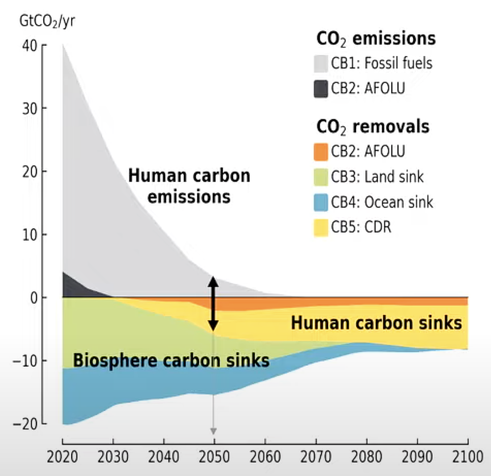

90% aller IPCC-Szenarien für das 1,5°C-Ziel beinhalten einen Temperatur-Overshoot bis 1,8°C um 2050, bevor eine Rückkehr in den sicheren Korridor bis 2100 möglich ist. Dies erfordert massive CO₂-Entnahme von 6-20 GtCO₂ jährlich - eine 1.000-fache Skalierung gegenüber heute. Parallel entwickelt sich ein robustes rechtliches Fundament für Corporate Carbon Removal Verpflichtungen, basierend auf etablierten Umweltrechtsprinzipien und wegweisender Klimarechtsprechung.
Da wir bis 2100 bereits 334-464 GtCO₂ entfernen müssen - mehr als die verbleibenden 250 GtCO₂ Budget - ist klar: Wir müssen schon heute mehr CO₂ aus der Atmosphäre holen, als wir überhaupt noch emittieren dürfen. Jede zusätzliche Emission ab sofort verschlechtert diese bereits kritische Bilanz weiter. Daher muss ab sofort jede neue Emission zu 100% durch Carbon Removal kompensiert werden.
Diese Verpflichtung schafft optimale Marktanreize: Unternehmen können frei wählen zwischen drastischer Emissionsreduktion (um CDR-Kosten zu sparen) oder Vollkompensation aller aktuellen Emissionen durch Carbon Removal. Die meisten werden eine Kombination beider Strategien wählen - je nach Kostenverhältnis in ihrem Sektor.
Diese Argumentation ist unwiderlegbar: Wer heute emittiert, obwohl wir bereits mehr entfernen müssen als wir emittieren dürfen, muss sofort die Verantwortung für die Wiederherstellung des atmosphärischen Gleichgewichts übernehmen. Alles andere wäre eine weitere Verschärfung der bereits unmöglichen CDR-Anforderungen für die Zukunft.
Bei aktuellen CDR-Kosten würde die sofortige Vollkompensation folgende zusätzliche Kosten verursachen. Diese Kosten können durch Forschung und Skalierung sinken - das ist jedoch Aufgabe der emittierenden Unternehmen.
Diese Kosten schaffen starke Anreize für Emissionsreduktionen: Ein Liter Benzin würde 0,35-0,70 EUR teurer, eine kWh Kohlestrom 0,15-0,30 EUR. Unternehmen haben dadurch direkten finanziellen Anreiz, sowohl ihre Emissionen zu reduzieren als auch in kostengünstigere CDR-Technologien zu investieren.
Wichtiger Hinweis: Die Kostensenkung ist Aufgabe der emittierenden Industrien. Wer heute emittiert, muss heute die entsprechenden CDR-Kosten tragen - oder durch Forschung, Entwicklung und Skalierung dafür sorgen, dass diese Kosten sinken.
Die oben dargestellten Kosten gelten nur bei strikter Einhaltung des IPCC AR6 1,5°C-aligned pathway. Jede Abweichung von diesem Pfad führt zu exponentiell steigenden CDR-Anforderungen und damit explodierenden Kosten.
Quelle: IPCC AR6 WGIII Summary for Policymakers, Figure SPM.5

Was die Grafik zeigt: Die graue Fläche oberhalb der Nulllinie stellt die menschlichen Kohlenstoffemissionen dar, die von heute etwa 40 GtCO₂/Jahr auf nahezu null bis 2050 sinken müssen. Die bunten Flächen unterhalb der Nulllinie zeigen die verschiedenen CO₂-Senken: CB2 (AFOLU) in orange, CB3 (Land sink) in grün, CB4 (Ocean sink) in hellblau und CB5 (CDR) in gelb. Der entscheidende Punkt: Die gelbe CDR-Fläche (CB5) muss von praktisch null heute auf 5-8 GtCO₂/Jahr bis 2050 wachsen - das entspricht der geforderten 1.000-fachen Skalierung.
Wenn Unternehmen nicht dem 1,5°C-Pfad folgen und weiterhin über das Budget hinaus emittieren, steigt der CDR-Bedarf exponentiell: Ein Verzug von nur 5 Jahren bedeutet doppelte CDR-Kosten, 10 Jahre Verzug bedeuten vierfache Kosten. Dies liegt an der mathematischen Natur kumulativer Emissionen und der begrenzten Zeit bis 2100.
Diese exponentiellen Kostensteigerungen ergeben sich aus der mathematischen Realität des Carbon Budgets: Jede Tonne CO₂, die heute über das Budget hinaus emittiert wird, muss später mit Zinsen zurückgezahlt werden, da die verfügbare Zeit für CDR-Skalierung schrumpft.
Die Botschaft ist eindeutig: Je länger Unternehmen mit der Vollkompensation warten, desto teurer wird es. Sofortiges Handeln ist nicht nur klimawissenschaftlich geboten, sondern auch betriebswirtschaftlich rational. Unternehmen, die heute beginnen, können noch von den günstigsten verfügbaren CDR-Technologien profitieren.
Die **Lamboll et al. (2023)** Studie in Nature Climate Change beziffert das verbleibende Carbon Budget für eine 50%-Chance auf 1,5°C auf nur noch 250 GtCO₂ ab Januar 2023 [2] - etwa sechs Jahre bei aktuellen Emissionsraten. Diese Revision reduziert das Budget gegenüber IPCC-Schätzungen von 2020 um die Hälfte aufgrund verbesserter Aerosol-Modellierung.
Aktuelle Klimaversprechen führen zu einem Peak bei 1,8°C um 2050 [3]. Selbst ambitionierte Szenarien der IPCC C3-Kategorie erreichen Peak-Erwärmungen von 1,7-1,8°C, bevor massive CO₂-Entnahme eine Stabilisierung ermöglicht.
Aktuelle CDR-Kapazitäten sind verschwindend gering: Engineered CDR-Technologien wie Direct Air Capture (DAC) entfernen heute nur 1,3 MtCO₂ jährlich [5] - gerade einmal 0,1% des Bedarfs. DAC-Kosten von 230-540 USD/tCO₂ (ETH Zürich 2024) [6] müssen auf unter 100 USD/tCO₂ sinken, während die Kapazität um das **1.000-fache** steigen muss.
Die erforderliche 1.000-fache Skalierung von CDR-Technologien stellt eine beispiellose technische und wirtschaftliche Herausforderung dar. Nur durch massive Investitionen und politische Unterstützung kann diese Transformation bis 2050 gelingen [7].
Das Verursacherprinzip ist tief in internationalem und nationalem Umweltrecht verankert. Die **EU Environmental Liability Directive (2004/35/EC)** [8] verpflichtet Verursacher zur Kompensation von Umweltschäden und schafft einen direkten rechtlichen Nexus zwischen Emissionen und Kompensationspflichten.
In Kraft seit 2024, verpflichtet rund 50.000 EU-Unternehmen zur Offenlegung von Klimazielen und Transitionsplänen unter "Double Materiality"-Prinzipien [11]. Die Corporate Sustainability Due Diligence Directive (CSDDD) von Juli 2024 erfordert explizit Paris Agreement-kompatible Klimaneutralitätspläne [12].
Das **Carbon Border Adjustment Mechanism (CBAM)**, definitiv ab 2026 [13], implementiert das Polluter-Pays-Prinzip durch direkte Kohlenstoffbepreisung eingebetteter Emissionen und schafft extraterritoriale Anwendung EU-weiter Klimaverpflichtungen auf Nicht-EU-Unternehmen.
Microsoft dominiert mit 63% des Marktvolumens (5,1 MtCO₂ 2024) [16] und demonstriert Corporate Leadership durch langfristige Offtake-Agreements. Die **Frontier Coalition** (Stripe, Shopify, Alphabet, Meta) hat 925 Millionen USD für CDR-Beschaffung zugesagt [17].
Neue Social Cost of Carbon-Studien (Nature 2024) schätzen Klimaschäden auf 185 USD/tCO₂ [18] - dreimal höher als bisherige Regierungsschätzungen und näher an aktuellen CDR-Kosten. Lernkurven-Analysen zeigen Break-even zwischen 2030-2040 [19].
**Massive Policy-Unterstützung** entwickelt sich: USA bieten 180 USD/tCO₂ Steuergutschriften und **3,5 Milliarden USD für DAC-Hubs** [20]. Die EU etabliert den weltweit ersten **Carbon Removal Certification Framework (CRCF)** mit QU.A.L.ITY-Standards für CDR-Zertifizierung [21].
Das **GHG Protocol** überarbeitet 2027 seine Standards mit expliziten CDR-Accounting-Regeln und strengeren Scope 3-Anforderungen [23]. Diese Entwicklungen schaffen de facto regulatorische Verpflichtungen für Corporate CDR-Beschaffung.
Evaluiert CDR-Integration in das Emissionshandelssystem. Vorgeschlagene Modelle umfassen ein Removal Trading Scheme (RTS) oder eine "Carbon Central Bank" für staatliche Intermediation [24]. CORSIA genehmigte 2024 erste CDR-Methodologien [25], während der UK ETS CDR-Integration ab 2025 plant [26].
Ein Portfolio-Ansatz ist unvermeidlich: **Biochar** führt als kostengünstigste permanente Lösung (80-200 USD/tCO₂) mit höchster Technologiebereitschaft (TRL 8-9) [29]. **BECCS** bietet mittelfristige Skalierung trotz Landnutzungskonkurrenz [30]. **DAC** zeigt höchstes Langzeitpotenzial bei sinkenden Kosten durch aggressive Lernkurven [6].
**Enhanced Rock Weathering** und **Ocean-based CDR** zeigen Gigaton-Skalierungspotenzial, bleiben aber in frühen Entwicklungsphasen [31,32]. Die **UNDO-Projekte** mit über 200.000 Tonnen verteiltem Gestein demonstrieren praktische Machbarkeit [33].
Erstens dokumentiert die IPCC-Forschung eindeutig, dass 1,5°C-Ziele nur mit massiver CO₂-Entnahme (6-20 GtCO₂/Jahr) erreichbar sind, nachdem Overshoot-Szenarien bis 1,8°C unvermeidlich geworden sind [1,4].
Zweitens müssen wir bis 2100 bereits 334-464 GtCO₂ entfernen - mehr als die verbleibenden 250 GtCO₂ Budget -, wodurch jede Emission ab sofort eine 100%-Kompensationspflicht auslöst [2,4].
Drittens etabliert evolvierende Klimarechtsprechung (Urgenda, Shell, deutsche Verfassungsgerichtsurteile) Corporate Duty of Care für Klimaschutz als rechtlich durchsetzbares Prinzip, während neue Regulierung (CSRD, CBAM, CSDDD) faktische CDR-Verpflichtungen schafft [9,10,11,12,13].
Viertens entwickeln sich robuste Marktmechanismen mit exponentieller Nachfrage (Microsoft, Frontier Coalition), während Technologien Kostenparität mit Social Cost of Carbon erreichen und Policy-Support (USA, EU) massive Skalierung ermöglicht [14,16,17,18,20,21].
Corporate Carbon Removal Verpflichtungen sind ab sofort zwingend erforderlich - nicht nur wissenschaftlich notwendig und rechtlich begründbar, sondern auch wirtschaftlich implementierbar. Unternehmen müssen 100% ihrer Emissionen ab sofort kompensieren, da wir bereits mehr CO₂ entfernen müssen (334-464 GtCO₂) als wir emittieren dürfen (250 GtCO₂). Sie haben aber die Wahlfreiheit zwischen drastischer Emissionsreduktion oder Vollkompensation durch CDR. Die 1.000-fache Skalierung bis 2050 erfordert sofortige Corporate Action - unterstützt durch ein sich schnell entwickelndes Ökosystem aus Standards, Märkten und rechtlichen Verpflichtungen.
[1] Climate Analytics | Is the 1.5°C limit still in reach? FAQs
https://climateanalytics.org/comment/is-the-15c-limit-still-in-reach-faqs
[2] In-depth Q&A: The IPCC's special report on climate change at 1.5C - Carbon Brief
https://www.carbonbrief.org/in-depth-qa-ipccs-special-report-on-climate-change-at-one-point-five-c/
[3] Carbon budget for 1.5°C will run out in just six years, study finds | World Economic Forum
https://www.weforum.org/stories/2023/11/carbon-budget-run-out-six-years/
[4] IPCC report: Carbon removal is now required to meet climate mitigation targets | Carbon Direct
https://www.carbon-direct.com/insights/ipcc-report-carbon-removal-is-now-required-to-meet-climate-mitigation-targets
[5] Nine key takeaways about the 'state of CO2 removal' in 2024 - Carbon Brief
https://www.carbonbrief.org/nine-key-takeaways-about-the-state-of-co2-removal-in-2024/
[6] Cost of direct air carbon capture to remain higher than hoped | ScienceDaily
https://www.sciencedaily.com/releases/2024/03/240304135808.htm
[7] Carbon removals: How to scale a new gigaton industry | McKinsey
https://www.mckinsey.com/capabilities/sustainability/our-insights/carbon-removals-how-to-scale-a-new-gigaton-industry
[8] EU Environmental Liability Directive (2004/35/EC)
[9] Milieudefensie v. Shell Entscheidung (2021)
[10] Urgenda-Urteil (2019)
[11] EU Corporate Sustainability Reporting Directive (CSRD)
[12] Corporate Sustainability Due Diligence Directive (CSDDD)
[13] Carbon Border Adjustment Mechanism (CBAM)
[14] What Is Carbon Dioxide Removal? Top Buyers and Sellers of CDR Credits in 2024
https://carboncredits.com/what-is-carbon-dioxide-removal-top-buyers-and-sellers-of-cdr-credits-in-2024/
[15] Billionen-Industrie: Europa könnte bis 2050 Technologieführer in der CO2-Entnahme aus der Atmosphäre werden
https://www.bcg.com/press/28june2024-billionen-industrie-europa-konnte-bis-2050-technologiefuhrer-in-der-co2-entnahme-werden
[16] Keep Calm and Remove On - CDR.fyi 2024 Year in Review
https://www.cdr.fyi/blog/2024-year-in-review
[17] Frontier Coalition Advanced Market Commitment
[18] Comprehensive evidence implies a higher social cost of CO2 | Nature
https://www.nature.com/articles/s41586-022-05224-9
[19] Technology Learning Curves Analysis
[20] US 45Q Tax Credits and DAC Hub Program
[21] EU Negotiations Reach a Provisional Deal on World's First Carbon Removal Certification Framework
https://www.akingump.com/en/insights/alerts/eu-negotiations-reach-a-provisional-deal-on-worlds-first-carbon-removal-certification-framework
[22] Key updates to GHG Protocol and SBTi: What companies need to know | Carbon Direct
https://www.carbon-direct.com/insights/key-updates-to-ghg-protocol-and-sbti-what-companies-need-to-know
[23] GHG Protocol Standards Review 2027
[24] Integrating permanent carbon removals into the EU ETS
https://www.catf.us/2024/12/integrating-permanent-carbon-removals-eu-ets-not-silver-bullet-balancing-act/
[25] CORSIA CDR Methodologies 2024
[26] UK ETS CDR Integration Plans
[27] German CDR Requirements 2045
[28] EU CDR Requirements 2040
[29] Biochar is cheaper than other carbon removal methods
https://www.weforum.org/stories/2023/11/biochar-carbon-removals-jack-of-all-trades-for-immediate-climate-action/
[30] BECCS Technology Assessment
[31] Enhanced weathering - Wikipedia
https://en.wikipedia.org/wiki/Enhanced_weathering
[32] Ocean-based CDR Research
[33] UNDO Enhanced Rock Weathering Projects
[34] IPCC AR6 WGIII Summary for Policymakers Figure SPM.5
https://www.ipcc.ch/report/ar6/wg3/figures/summary-for-policymakers/figure-spm-5/